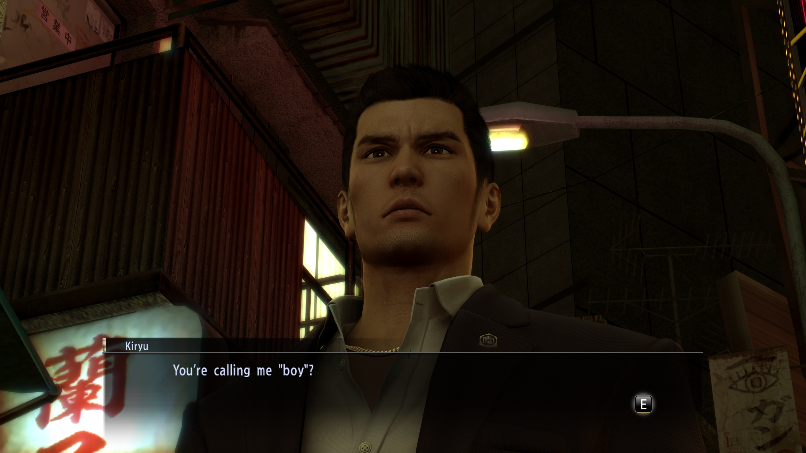

Kazuma Kiryu es el protagonista principal de la franquicia de videojuegos Yakuza (ahora Like a Dragon). Conocido como el "Dragón de Dojima" por el tatuaje de dragón que lleva en la espalda, es un exmiembro del Clan Tojo famoso por su fuerza física, su código de honor y su sentido de la justicia.